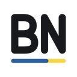
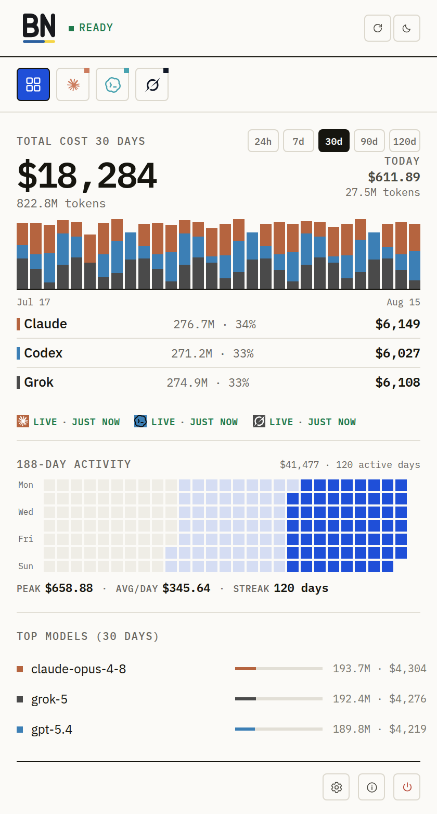
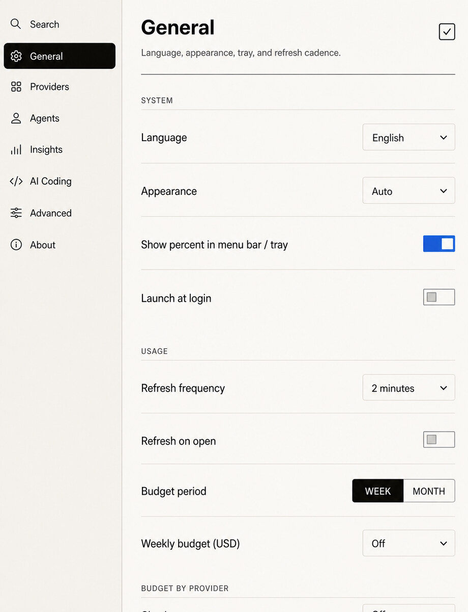

What is left
See the native quota windows a provider exposes; unavailable stays unavailable.

BirdNion View sourceYour tiny desktop quota companion
Claude, Codex, Gemini and other tools put usage in different places. BirdNion keeps what is left and when it resets one click away—using only the provider connections you choose.
Claude · Codex · Gemini · Cursor · Grok · see exact coverage

Three honest answers
without breaking your flow.
START SMALL / ONE TOOL
Use Homebrew on macOS or a release bundle on Linux.
Claude, Codex and Grok have the guided First Live path.
BirdNion saves your choice, then checks the real source before calling it Live.
A real quota and reset card—not demo data—confirms the connection worked.
DURING A REAL WORK SESSION
Before a long task or a tool switch, open BirdNion. It shows what each enabled source actually reports—and says when a connection needs attention instead of inventing a number.
See the native quota windows a provider exposes; unavailable stays unavailable.
Use reset countdowns to decide whether to wait, switch tools, or keep going.
Turn Claude, Codex, and Grok session logs into daily cost history when available.
Jump to the exact provider control, fix the source, and run the real check again.
STAYS OUT OF YOUR WAY
On macOS, BirdNion lives in the menu bar. On Linux, it lives in the system tray. Open the details when you need them; keep them quiet when you do not.

YOU CHOOSE WHAT IT READS
BirdNion does not scan everything on your computer. It reads only a documented source you enable. That source may still contact its provider directly.
TRY ONE TOOL FIRST
macOS 14+ via Homebrew
brew install --cask hapo-nghialuu/tap/birdnion
Linux x86_64 · MIT licensed · no BirdNion sign-up
Download macOS or LinuxNo. It reads documented locations only for sources you enable; there is no unrestricted filesystem scan.
It depends on the provider. BirdNion can reuse supported CLI, OAuth or browser sessions; other sources require an explicit key or configuration.
No. Each card reflects only what that provider or local source actually exposes, including unavailable states.
The current app is ad-hoc signed. Homebrew removes quarantine during install; if macOS still blocks it, use Right-click → Open.